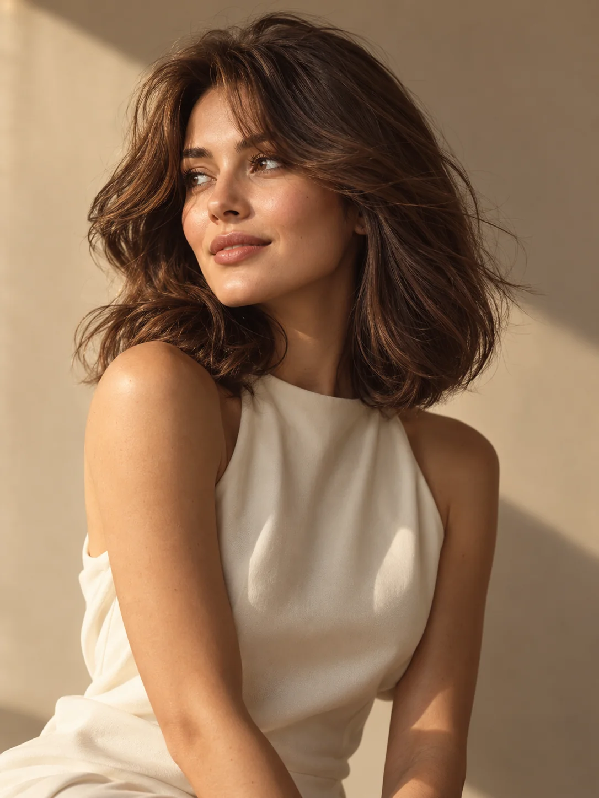
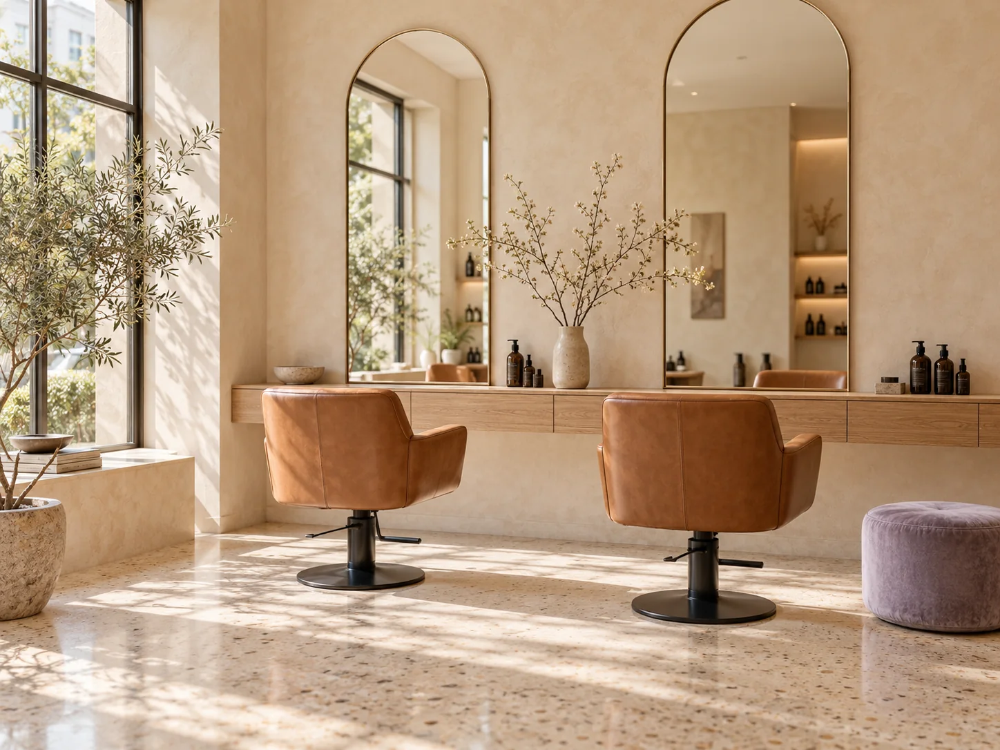

Стрижки
от 1 200 ₽Форма, которая раскрывает ваш характер.
✳ МЕСТО ДЛЯ ВАШИХ ПЕРЕМЕН
Не просто новая стрижка. То самое чувство,
когда отражение в зеркале — это вы.
Красота без лишних правил.
Забота — в каждой детали.

01 — УСЛУГИ И ЦЕНЫ
Освежить привычный образ или решиться
на что-то новое? Найдём то, что подходит вам.
Форма, которая раскрывает ваш характер.
От тонких нюансов до смелых решений.
Здоровое сияние и лёгкость каждый день.

ВАШЕ МЕСТО СИЛЫ02 — ЗНАКОМЬТЕСЬ, «ПРЕОБРАЖЕНИЕ»
Выдохнуть. Выпить любимый кофе. Рассказать, о чём давно мечтали, — и знать, что вас услышат.
Для нас красивый результат начинается с доверия. Поэтому сначала мы знакомимся с вами и вашими волосами, а уже потом берём в руки ножницы.
03 — НАСТРОЕНИЕ ДЛЯ ПЕРЕМЕН
Сохраните понравившийся образ в мыслях.
А мы поможем сделать его вашим.
Самый красивый
образ — тот,
в котором
хорошо вам.
04 — ПЕРЕД ПЕРВЫМ ВИЗИТОМ
Чтобы ваше первое знакомство
с нами было лёгким.
Это отличная отправная точка. Выберите консультацию: обсудим ваши привычки, текстуру волос и то, сколько времени вы хотите тратить на укладку. Можно принести фотографии образов, которые вам нравятся.
Перед стрижкой специальная подготовка не нужна — мытьё уже входит в услугу. Если планируете окрашивание или уход, особенности подготовки лучше заранее обсудить с мастером.
Итоговая стоимость зависит от длины и густоты волос, выбранной техники и расхода материалов. Мастер обсудит с вами точную сумму до начала процедуры.
Конечно. Покажите понравившийся образ — так нам будет проще понять ваши ожидания. Мы подскажем, как адаптировать его к структуре ваших волос и повседневному уходу.
Свяжитесь с администратором салона и сообщите дату и время визита. Если планы изменились, по возможности предупредите заранее — мы поможем подобрать другое удобное время.
ВРЕМЯ, КОТОРОЕ ВЫ ПОСВЯТИТЕ СЕБЕ
А мы будем рядом — с идеями, заботой
и чашечкой чего-нибудь вкусного.
Скоро здесь появятся адрес
и контакты нашей студии.